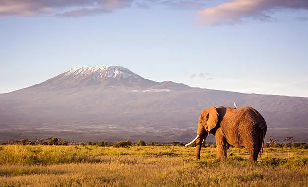
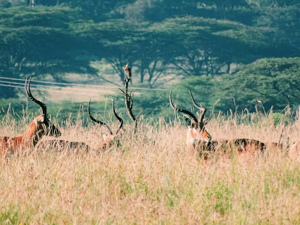

Who We Are
Who We Are
Safarii was created to make discovering Kenya’s national parks simpler, clearer, and more inspiring for travelers from around the world. Kenya is home to some of the most extraordinary wildlife destinations on the planet from the sweeping savannahs of the Maasai Mara National Reserve to the elephant-filled plains of Amboseli National Park and the rugged wilderness of Tsavo East National Park.
Planning a safari in Kenya can often mean navigating fragmented information about national parks, wildlife experiences, visitor guidelines, and accommodation options. Safarii was created to simplify this process by bringing reliable and structured information together in one place. Beyond helping travelers discover destinations and book eco-friendly lodges, the platform also encourages a deeper appreciation of Kenya’s natural heritage.


Purpose
To become a trusted digital gateway for exploring Kenya’s national parks and safari experiences.
Our mission is to help travelers discover Kenya’s wildlife destinations with ease while promoting responsible tourism and appreciation for protected landscapes. Through Safarii, visitors can explore parks, learn about their unique ecosystems, and discover accommodations that bring them closer to nature.
We aim to make information about Kenya’s national parks more accessible by presenting it in a clear, organized, and visually engaging way.
We strive to help travelers discover accommodations located within these protected areas, making it easier to plan authentic safari experiences close to nature.
We strive to help travelers discover accommodations located within these protected areas, making it easier to plan authentic safari experiences close to nature.
